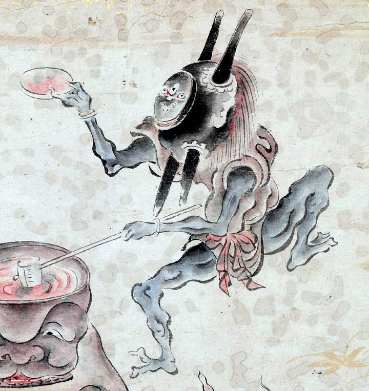

角盥の化物。角盥の底に顔が描かれている。青色の体に、茶色の衣を身につけている。赤い帯を巻いている。左手に杓子をもち、右手には器を持っている。三つ目のように見える。
著作者：吉光／出典：親書誌：U426_nichibunken_0057：百鬼ノ図；ヒャッキノズ／日付：2006／資源識別子：U426_nichibunken_0057_0004_0002
Copyright (c)2010- International Research Center for Japanese Studies, Kyoto, Japan. All rights reserved.